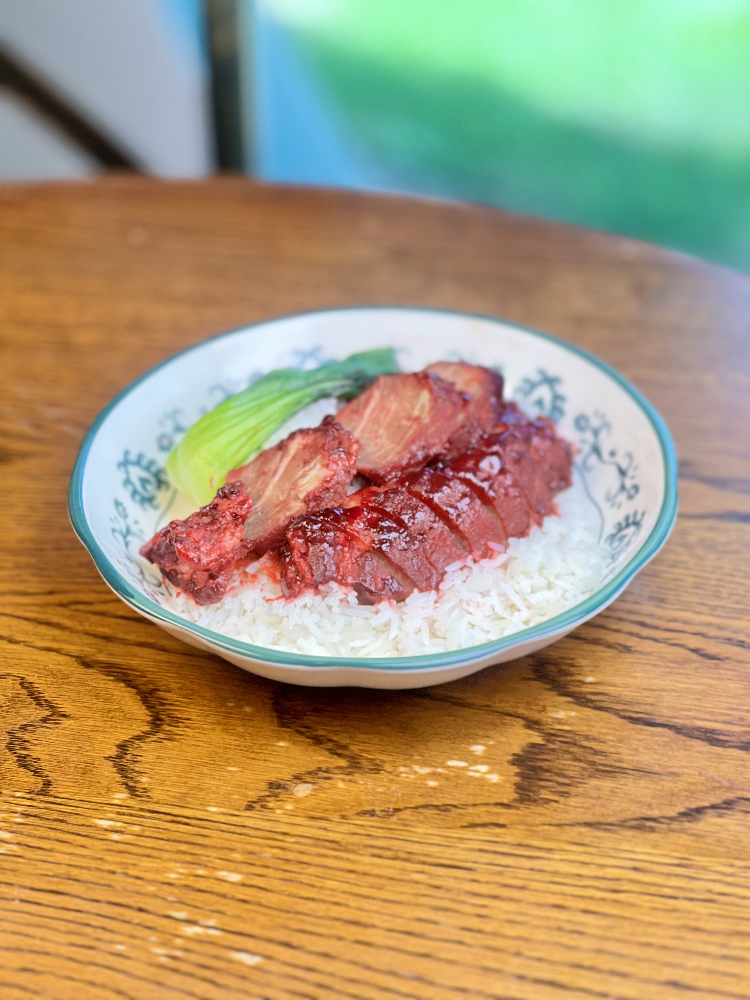
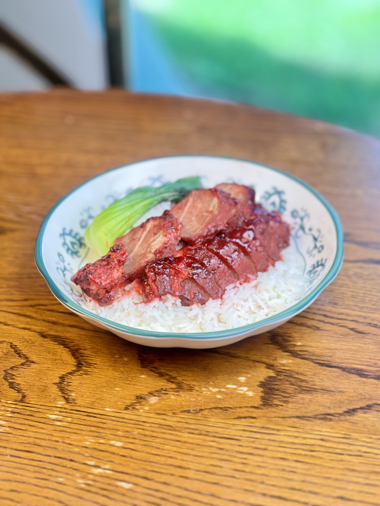
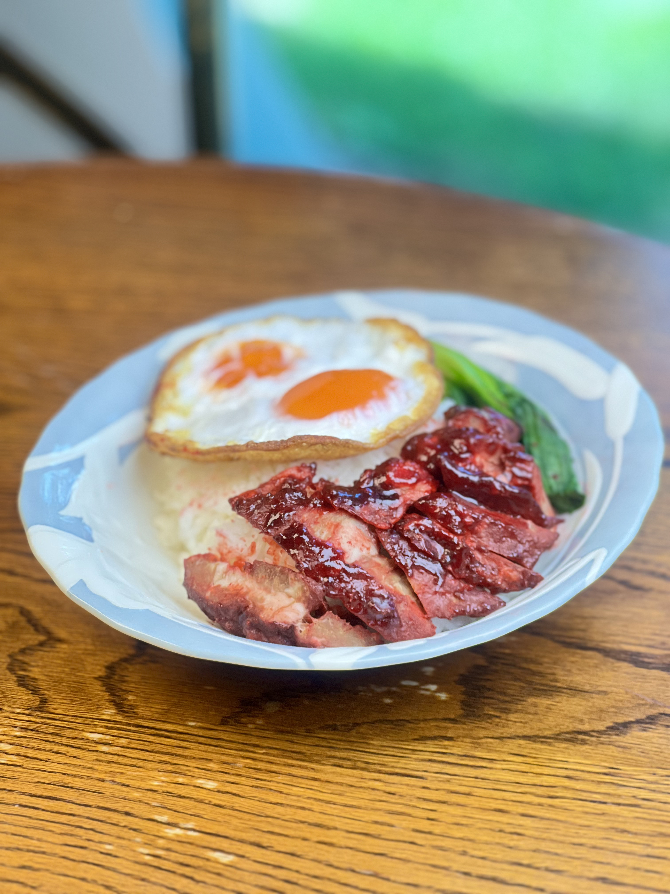
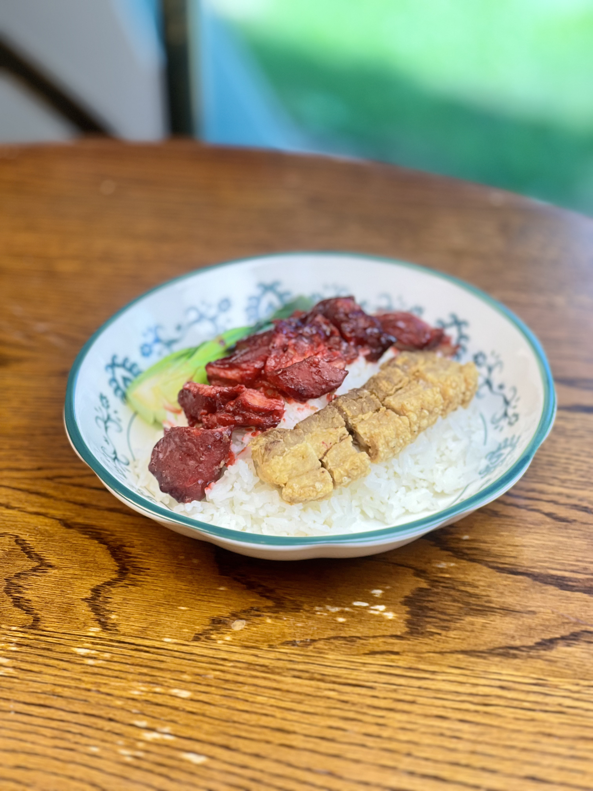
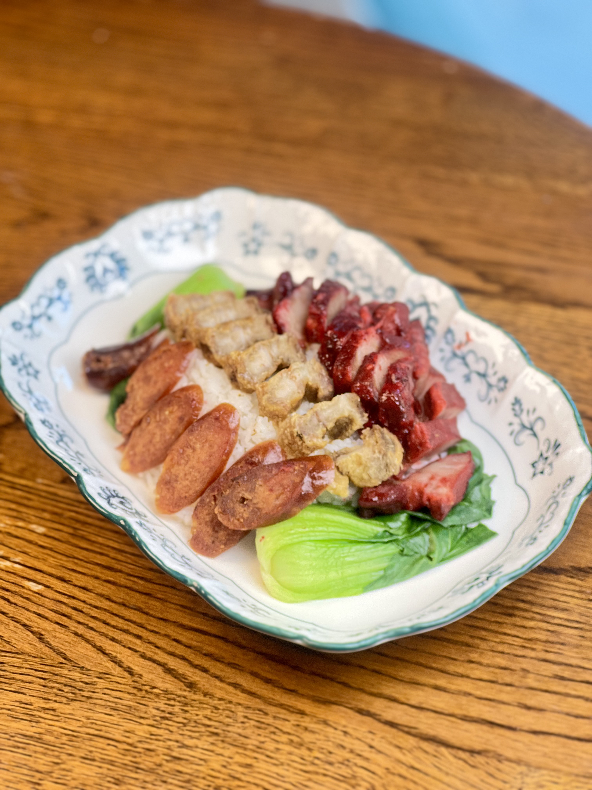

ข้าวหมูแดง
฿60หมูแดงรมควันข้ามคืน หั่นสด ราดซอสเกรดพิธี พร้อมน้ำจิ้มและน้ำซุป
หมักหมูด้วยเครื่องเทศ ย่างไฟอ่อน แล้วรมควันข้ามคืนจนหอมถึงกลางชิ้น ราดซอสเคี่ยวเองสูตรเฉพาะของร้าน
คนส่วนใหญ่ค้นหาเราด้วยคำว่า ข้าวหมูแดงสุพรรณ · ข้าวหมูแดงเกรดพิธี · กิมเง็ก

ข้าวหมูแดงเกรดพิธี ร้านกิมเง็ก สุพรรณบุรี — หมูแดงรมควันข้ามคืน ราดซอสสูตรเฉพาะ
หมักหมู ย่าง รมควันข้ามคืน กลิ่นควันซึมถึงกลางชิ้น ไม่เร่งสี
เคี่ยวเองทุกวัน ทาหมูทีละชิ้นอย่างพิถีพิถัน แบบเกรดพิธี
ถนนขุนช้าง ต.ท่าพี่เลี้ยง เดินทางสะดวก ใกล้ตัวเมือง
ทุกจานใช้หมูแดงชุดเดียวกันที่รมควันข้ามคืน หั่นสดเมื่อสั่ง

หมูแดงรมควันข้ามคืน หั่นสด ราดซอสเกรดพิธี พร้อมน้ำจิ้มและน้ำซุป

เพิ่มหมูแดงอีกเท่าตัว สำหรับคนหิวจัด

หนังกรอบ เนื้อนุ่ม ราดซอสสูตรเดียวกับหมูแดง

หมูแดง หมูกรอบ ไส้กรอก ครบในจานเดียว

เพิ่มไข่ต้มพะโล้ซอส กลมกล่อมขึ้นอีกขั้น

ซื้อกลับบ้าน แถมซอสเกรดพิธีแยกถุง (ขั้นต่ำครึ่งกิโล)
ราคาอาจเปลี่ยนแปลงตามฤดูกาล · สอบถามเมนูพิเศษที่ 085-529-8799

ร้านกิมเง็กเริ่มจากเตาย่างหลังบ้านบนถนนขุนช้าง ด้วยความเชื่อง่าย ๆ ว่าหมูแดงที่ดีต้องใช้เวลา เราหมักหมูทั้งวัน ย่างด้วยไฟอ่อน แล้วรมควันทิ้งไว้ข้ามคืน ก่อนเปิดขายในเช้าวันถัดไป
“เกรดพิธี” คือมาตรฐานที่เราตั้งให้ตัวเอง — หมูแดงที่ขึ้นจานลูกค้าต้องดีเท่าจานที่จัดขึ้นโต๊ะพิธีของครอบครัว
ไม่ลดขั้นตอน ไม่เร่งเวลา และไม่ใช้สีผสมอาหารเพื่อให้หมูดูแดงขึ้น สีที่เห็นคือสีจากซอสและควันจริง ๆ
คัดหมูทุกเช้า หั่นสดเมื่อสั่ง ราดซอสตอนเสิร์ฟเท่านั้น
เครื่องเทศชุดเดิมจากรุ่นก่อน รมควันข้ามคืนทุกวัน
21/9 ถนนขุนช้าง ต.ท่าพี่เลี้ยง อ.เมืองสุพรรณบุรี
เปิดทุกวัน 07:30 – 14:00 น. วันหยุดหมูแดงมักหมดก่อนเวลาปิด แนะนำโทรถามก่อนที่ 085-529-8799
มีที่จอดหน้าร้านริมถนนขุนช้าง และจอดเพิ่มได้ข้างร้าน ช่วง 11:00–13:00 น. จะแน่นที่สุด
ได้ทุกเมนู แยกซอสและน้ำซุปให้ หากสั่งจำนวนมากโทรแจ้งล่วงหน้าอย่างน้อย 1 ชั่วโมง
รับจองสำหรับกลุ่ม 6 คนขึ้นไป โทรหรือทักไลน์ 085-529-8799 ล่วงหน้า 1 วัน